基于光流和可微光线追迹的非接触式透镜计量
摘要
准确的透镜表面计量对于确定折射光学元件的制造几何形状及其与指定设计的偏差至关重要。我们展示了一种透射计量方法，该方法从小波噪声图案掩模的位移中重建折射透镜表面。透镜引起的畸变由密集位移场表示。可微光线追迹器使用经过标定的近远心相机模型和有效有限光线原点来拟合透镜几何形状。我们在商用透镜上验证了该方法。恢复的几何形状与标称规格一致，并将平-非球面重建结果与色散共焦轮廓测量进行了比较。
1 引言
面形误差会影响光焦度、像差量，以及球面、非球面和自由曲面元件可被制造的速率[8, 2, 29, 4, 5]。尽管接触式坐标测量机能够进行准确的表面测量，但该过程相对缓慢，而且物理接触可能会损坏光学元件[6, 8, 7, 8, 4, 9]。非接触干涉测量技术具有高空间分辨率，但在处理具有大偏离量的表面时，其动态范围可能受到限制，在这种情况下可能需要特殊的零位光学元件或计算机生成全息图[7, 9, 4, 10]。偏折测量方法通过测量光线偏折来确定表面形状，并且能够处理较大的表面斜率[11, 6, 12, 13]。对于折射光学器件，透射测量仍然困难，因为所观察光线的位移取决于折射表面的几何形状、折射率和成像装置[13, 2, 14, 15]。
基于图案的透射测量为观察这些光线偏折提供了一种直接手段。背景导向纹影（BOS）和合成纹影方法都通过已知背景的表观位移来估计折射，并已广泛应用于透明介质和液体界面的测量[16, 17]。将光流处理与随机点和小波噪声背景结合使用，可以在较大的位移范围内实现密集的位移估计[18]，并且远心成像已被用于提高此类测量的空间保真度[19]。用于光学表面的早期图案透射技术也通过将表面模型拟合到测得的光线偏折来确定几何形状[6, 20]。上述方法展示了本文所采用的传感原理：通过已知图案的位移来观察折射，并将测得的位移场作为表面重建的数据。
近年来的计算技术使基于光线偏折测量的逆向重建更加实用。可微折射偏折测量术通过可微前向模型同时确定透镜的形状和位置[14]。折射零屏方法通过迭代优化测量图案的畸变，已成功恢复平凸非球面[21]。Vision Ray Metrology 能够直接从测得的光线偏折重建表面形貌，并已用于面形与中空间频率表征[8, 17]。这些方法还凸显了透射计量中标定、远心性、轴向定位和多表面条件控制的重要性[8, 17, 23]。
我们根据透过被测光学元件观察到的固定小波噪声掩模的位移，重建折射透镜表面。一幅作为参考的掩模图像与一幅带透镜获得的第二幅图像共同给出稠密位移场。该位移场首先使用已对少量图像对应点拟合的物理径向模型建立，然后通过直接图像一致性优化加以改进。随后使用可微光线追迹器估计透镜形状，并采用经过标定、具有有效有限光线原点的近远心相机模型。对于球面透镜和探索性残差分析，重建从二次曲面推进到稠密高度图，再到最终参数拟合。定量 AL2550 基准直接优化一个共享旋转非球面，并为每次采集设置独立位姿。该方法在商用平凸、双凸和平非球面透镜上进行了测试，并将重建的非球面与色散共焦轮廓测量所得结果进行比较。残差高度图在 Zernike 基下进行分析，以表征拟合标称几何之外的低阶面形结构。
2 方法
该过程从铬掩模的两幅图像以及由可微光线追迹拟合的透镜诱导位移场开始。球面透镜工作流随后将优化后的高度图简化为光学形状参数和残差图；AL2550 基准直接拟合旋转非球面参数。除非另有说明，方法部分各图均以 Thorlabs LA1608-A 平凸透镜作为所考虑的示例。该测量演示了畸变反演、可微表面重建和基于残差的像差分析。
2.1 实验装置
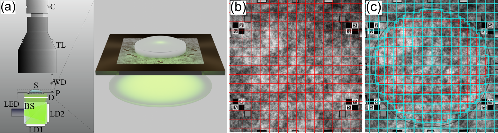
每次测量都使用未畸变图案的参考图像和透镜置于掩模上时拍摄的第二幅图像。图 1 展示了该装置。竖直配置利用重力使样品与掩模保持接触，避免了水平布置所需的机械对准夹具，并保持全孔径可见。由于刻蚀图案直接暴露于透镜后表面，样品与靶标之间未引入盖玻片 [24, 15, 17]。
该光学系统由三个部分组成：底部的背景照明、中间的二值图案测量板，以及其上方的远心成像系统。在理想的物方远心系统中，主光线平行于光轴，从而减少透视畸变并支持正交相机近似。每个像点仍接收由数值孔径决定的有限光线锥。在实际中，远心镜头与该理想情况略有偏差；用于估计该偏差并将其纳入光线模型的校准方法见补充材料（第 成像系统校准 节）。
2.1.1 测量图案
多种靶标能够检测折射光学元件中的透射畸变，例如毛玻璃漫射器、印刷透明片、用于合成纹影的激光打印随机点靶标，以及刻蚀二值掩模 [17, 25, 26, 27]。我们选择铬刻蚀二值小波噪声掩模有两个原因。首先，二值铬图案提供高对比度，并且其制造尺度可以小于相机采样尺度；掩模的特征尺寸在通过 0.184X 远心镜头成像时，约相当于 15 个掩模像素映射到每个相机像素上。其次，小波噪声非常适合光流，因为其尺度不变的直方图分布与经典光流算法采用的由粗到细金字塔兼容，并且与 BOS 相关的先前研究已使用光流处理直接评估小波噪声背景 [1, 29, 2, 3, 18]。
有关图案制备和图像域验证的详细信息，可参见补充材料（节：图案设计与采集保真度）。
2.2 畸变场反演
畸变场的测量与使用随机图案的波前传感技术相关[25, 26, 27]。这些方法将参考图像与位移图案的图像进行比较，并在傍轴近似条件下通过优化势场来恢复相位。当使用通光孔径透镜进行测量时，孔径边缘附近的大光线偏差会使傍轴近似面临挑战。我们首先使用简单的几何模型初始化位移场，然后通过直接的图像一致性优化对其进行改进，以使变形图像与测量数据保持一致。该初始步骤所采用的物理径向模型在补充材料中说明（节：位移场初始状态估计）。损失函数的定义、正则化项以及稠密细化中所用优化细节在同一节中给出，见可微优化细化。
图 2 展示了一个代表性测量在物理初始化和后续稠密细化方面的情况；图案验证的一个示例可在补充材料中找到（节：图案设计与采集保真度）。
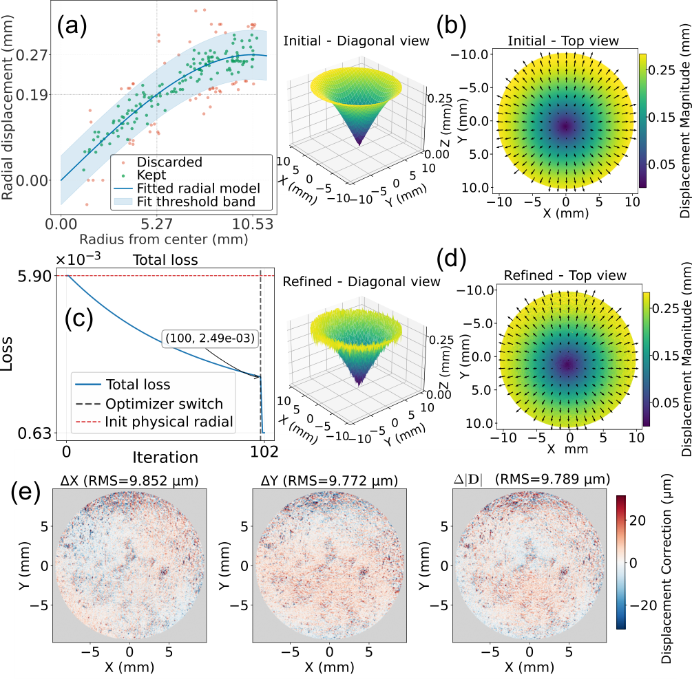
2.3 可微表面求解器
图 3 给出了重建循环的概览。在每次迭代中，当前透镜和相机参数利用可微光线追迹产生预测位移场。然后将该预测场与第 2.2 节获得的观测场进行比较，并将该比较得到的位移残差用于数据一致性项。重建受到物理和几何惩罚，并且在细化高度图时施加弱平滑正则化。梯度通过可微前向模型反向传播，以更新重建参数。损失函数的完整定义见补充材料（第 重建目标与优化阶段 节）。
在重建过程中，我们优化透镜参数以及主要影响可观测性的辅助对准参数，包括图案平面内的透镜偏心 和成像轴的小角度位姿校正。有限射线原点参数（虚拟针孔原点）在相机标定过程中获得（见补充材料第 成像系统标定 节），随后在后续重建中固定。为减少歧义，中心厚度（CT）被约束到测量值，搜索窗口很窄，为 。半径、边缘厚度和面形项则通过软惩罚控制。测量多样性及由此产生的参数条件化在补充材料第 测量多样性与条件化 节中讨论。
前向光线追迹模型基于补充材料（第 成像系统标定 节）所述的标定相机几何。由于测量量是传感器处的像素位移，预测位移由参考状态与加透镜状态之间的前向射线映射的逆对应关系获得。射线模型和逆映射的推导见补充材料（第 前向射线模型 节和第 预测位移计算 节）。
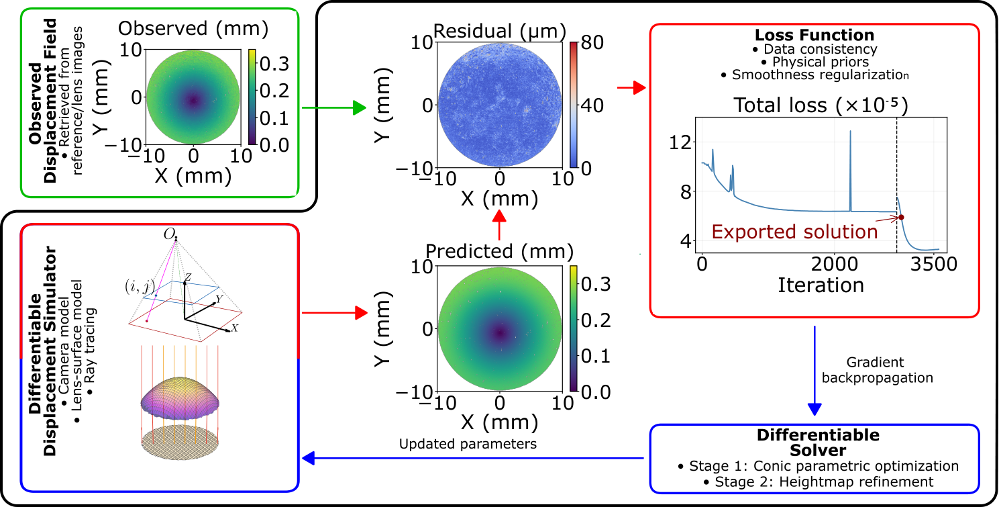
2.3.1 面形优化
重建的第一步是估计最能解释所测畸变场的表面。该优化过程与设计参数的最终呈现分开进行。表面的估计以位移一致性要求为指导；优化后的表面是在后续拟合阶段才转换为常规光学参数。
阶段1：二次曲面参数优化。 第一阶段使用不含非球面系数的二次曲面模型：
| (1) |
其中 为曲率半径， 为二次曲面常数。该阶段捕捉主要几何形状，并校正成像系统的位置失准和角度失准。
阶段2：高度图细化。 阶段1收敛后，在弱平滑正则化和数据主导加权下进行局部细化时，由高度图取代二次曲面表示。本文报道的单面球面测量细化前表面高度图，并保持先前的参数化后表面估计不变。成对的前/后表面测量可细化两个高度图。在此阶段，恢复相对于理想二次曲面的空间偏差，所得密集表面估计用于残差和像差分析。
2.3.2 用于最终形状参数的面形拟合
光学形状参数通过将参数化表面拟合到优化后的高度图来获得。在该配准步骤中，将表面形状与任何残余的平移和取向分离，这对于无需使用独立基准即可执行密集3D测量是必要的 [6, 7, 8, 9]。关于位姿配准、拟合参数向量和优化过程的更多信息见补充材料（第 重建目标与优化阶段节）。
该配准之后，局部矢高遵循 ISO 10110-12 非球面约定 [10]：
| (2) |
在球面分析中， 和 均设为零；对于非球面分析，它们在高度图阶段之后确定，在当前实现中最高到 。将该拟合过程得到的球面半径与目录规格进行比较。对于定量 AL2550 基准，分阶段优化直接拟合共享参数 ，并带有各采集特定的横向平移和倾斜； 固定为零。其 CCP 旋转拟合模型包括 。对于双表面透镜，拟合模型保持不变。较大的误差，尤其是出现在更平坦后表面上的误差，与双表面逆问题条件较差这一事实一致。
残差定义、滤波、波前转换和 Zernike 分解见补充材料（第 残差与像差分析节）。
3 结果
我们测量了光学实验室常用的现成 Thorlabs 透镜。该套件包括平凸、双凸球面透镜以及平非球面透镜。其他几何形状，包括平凹、双凹和弯月透镜，也与相同的测量原理兼容。所分析重复次数与结果一并列出。
使用优化后的高度可以研究补充材料（第节残余与像差分析）中描述的残余表面偏差。然而，在当前装置中，由于成像系统具有远心放大率和单色传感器，对更高空间频率项不太敏感，因此分析仅限于低空间频率成分。
3.1 校准结果
四次独立校准测量得到有效远心度误差约为，投影光线原点距离图案平面约为，RMS 位移残差为。尽管这些值描述了有效投影相机模型，但不应将其理解为对制造商远心镜头规格的直接重述。有关校准程序、折射率测量、位移图、重复性统计和收敛结果的更多细节见补充材料（第节成像系统校准和第节实验折射率测量）。
3.2 平凸透镜
在处理前表面恢复时，平凸透镜提供了最简单的示例，因为大部分光焦度由单个折射表面产生。对于每个透镜型号，我们报告相对于目录半径的平均带符号偏差，以及重复拟合均值的双侧 95% 置信区间，计算方式为，其中样本标准差为，包含的拟合数为。这些区间描述重复性；它们不包括校准不确定度和目录公差。对于至少四次拟合的组，在计算均值和区间之前，剔除超出 1.5 倍四分位距围栏的半径偏差。图中的表格给出包含/总计数：LA1027-A、LA1131-A 和 LA1229-A 各剔除一次拟合，LBF254-050 前表面也剔除一次拟合。其他组包含所有拟合。所有型号的半径拟合均使用 20 mm 的孔径直径。
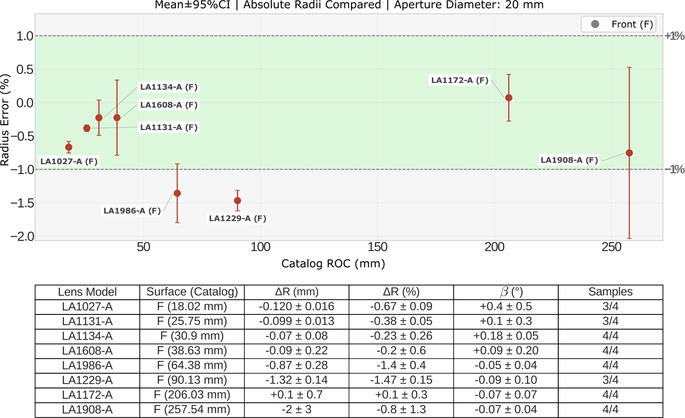
图 4 报告了八个平凸透镜的前表面 ROC 估计值。八个平均半径误差中有六个落在带内，平均误差范围约为至。大多数平均误差为负，表明前表面半径被轻微低估。标称半径最大的透镜具有最宽的重复性区间。
3.3 双凸透镜
对于双凸透镜，我们给出 LBF254-050 和 LBF254-200 前表面和后表面的带符号 ROC 误差，采用相同的 20 mm 孔径判据和相同的重复测量统计。
图5中，前表面和后表面的可恢复性之间观察到明显的不对称。前表面的平均误差为 –0.80% 和 –1.5%。后表面表现出更大的系统偏差（LBF254-050 为 +8.6%，LBF254-200 为 –6.9%）。置信区间比平均偏差更窄，表明后表面的估计稳定但有偏。
该模式与双表面透镜中后表面恢复所受的受限条件性相符。位移数据对前曲率有很强影响，而后曲率更受模型失配以及通过透镜厚度和折射路径产生的耦合影响。两个后表面案例中观察到的符号反转无法用单一全局偏移解释，且与曲率相关偏差相符。
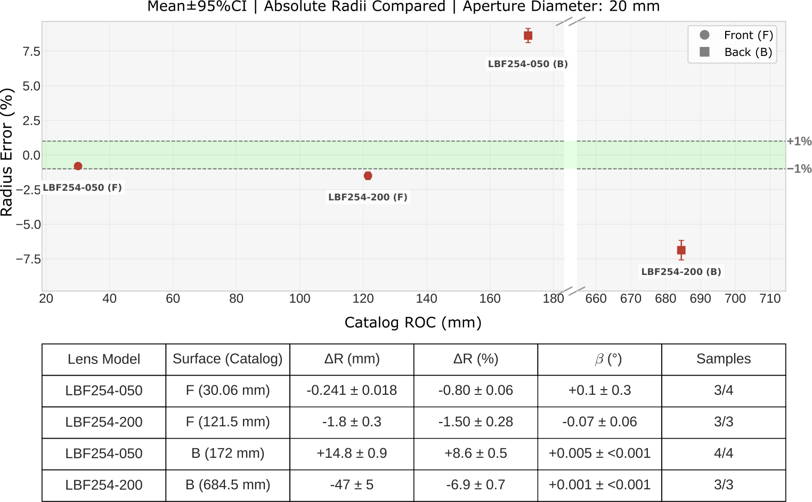
3.4 平-非球面透镜
与球面样品相比，平-非球面透镜需要更完整的表面参数描述：曲率半径、圆锥常数以及式（2）中定义的高阶非球面系数。我们聚焦于 Thorlabs AL2550 透镜。由于高阶系数的不同组合可以在有限孔径上产生非常相似的矢高轮廓，我们将物理表面一致性作为主要精度指标，并将单个系数的恢复作为次级可识别性诊断。相应的条件分析见补充材料。
3.4.1 AL2550 非球面透镜的测量结果
对于 AL2550 基准，对共享旋转非球面进行直接分阶段优化，使用固定直径 的重建孔径，其以成对基准标记推导的载具中心估计为中心。每次采集独立拟合横向偏心与双轴倾斜，而面内旋转保持标称值。中心厚度固定为测量值 ，折射率设为 565 nm 下的 1.5178 [37]。独立 CCP 测量具有较小的可用视场，因此定量 DRT–CCP 表面比较仅限于二者共同的中心直径 区域。重建阶段、孔径构建和可识别性控制见补充材料。
3.4.2 与共焦色散轮廓术的基准比较
采用色散共焦轮廓测量（CCP）作为 AL2550 旋转表面的独立基准。采集细节、固定的 CCP 验证窗口以及表面拟合流程见补充材料（第 CCP 基准处理 节）。
表 1 报告了共同 直径区域上的圆域 RMS 矢高差。对独立采集的 CCP 数据拟合得到的旋转表面与制造商处方相差 RMS。所选 DRT 重建与制造商表面相差 RMS，与 CCP 旋转表面相差 RMS。这些比较的是旋转表面，而不是原始 CCP 点云，且不构成测量不确定度界限。采用矢高比较是因为各高阶系数强相关，并且在有限测量孔径上条件数很差。
| Surface comparison | RMS sag difference () |
|---|---|
| CCP 与制造商处方对比 | 0.09 |
| DRT 与制造商处方对比 | 0.50 |
| DRT 与 CCP 旋转拟合对比 | 0.44 |
附加优化测试表明，测量位移尺度中的小幅乘性失配可以被低阶非球面形状吸收。在进一步形状优化之前拟合该位移尺度因子，可抑制大部分由此产生的矢高误差；条件数与位移尺度测试见补充材料。
还使用受控合成扰动来表征与目录系数参数化无关的可恢复性。先使用光线追迹逆模型、再使用完整的模拟图像与光流流程，测试了每孔径跨越 2–12 个周期的方向性正弦矢高扰动。在逼真图像模型下，满足恢复准则的最低 RMS 矢高幅值在每孔径 2、4、8 和 12 个周期处分别为 5、2、1 和 。这些数值描述的是对已知正弦基的合成恢复，并非实验表面分辨率极限；更多基传递测试总结于补充材料。
由 DRT 和 CCP 重建得到的残余结构在补充材料（第 残余与像差分析 节）中单独讨论；这一探索性残余比较不用于定量表面精度指标。
4 结论
本研究涉及使用密集掩模位移场测量折射透镜的透射特性。该装置包括铬小波噪声掩模、近远心成像系统、使用有限原点投影相机模型对非理想远心度进行校准，以及可微光线追迹；球面透镜工作流程从二次曲面到高度图再到最终光学参数，而 AL2550 基准直接优化一个共享旋转非球面，并采用采集特定的位姿。
对于平凸球面透镜，八个平均半径误差中有六个位于标称目录值的 以内。对于双面双凸透镜，测量面临更高要求。前表面恢复仅存在轻微偏置，但更平坦或约束较弱的后表面表现出较大的系统性偏差。这一结果与透射测量的性质一致，因为多个折射界面会产生耦合的位移特征。
对于 AL2550 平凸非球面透镜，旋转重建结果与 CCP 旋转拟合在共同验证孔径上相差 RMS。单个高阶多项式系数仍然病态，因此不被单独解释为精度指标。补充优化和位移尺度测试表明，较小的乘性位移误差可被低阶非球面形状吸收，这支持将恢复的矢高与独立表面测量进行直接验证。仍存在一些局限性。当前校准模型未考虑视场相关成像畸变。双表面透镜的条件数需要改善，尤其是后表面更平坦时。高空间频率的像差项受现有成像链限制。克服这些限制需要视场相关相机校准、更高分辨率成像以及对恢复残差表面的独立验证。由于该方法利用非相干照明和可重复使用的参考图像，每次透镜测量仅需采集畸变图案图像。工作距离由远心成像系统决定，不需要近接触探头。
基金资助
阿卜杜拉国王科技大学（KAUST）（Individual Baseline Funding）。
致谢
作者感谢 Qiang Fu 和 Hadi Amata 在二值掩模制备方面提供的帮助。
披露
作者声明无利益冲突。
数据可用性
本文所呈现结果所依据的数据目前尚未公开，但可在合理请求下向作者获取。
补充文档
补充材料在本 arXiv 投稿中紧随主稿件之后。
References
- [1] N. El-Hayek, H. Nouira, N. Anwer, et al., “A new method for aspherical surface fitting with large-volume datasets,” Precision Engineering 38, 935–947 (2014).
- [2] J. Ye, Z. Niu, X. Zhang, et al., “Simultaneous measurement of double surfaces of transparent lenses with phase measuring deflectometry,” Optics and Lasers in Engineering 137, 106356 (2021).
- [3] Q. Hao, Y. Liu, Y. Hu, and X. Tao, “Measurement techniques for aspheric surface parameters,” Light: Advanced Manufacturing 4 (2023).
- [4] V. Mishra, D. R. Burada, K. K. Pant, and G. S. Khan, “Advances in ultra-precision manufacturing and metrology for freeform optics,” in Advances in Optical Manufacturing, (Elsevier, 2024).
- [5] J. P. Rolland, M. A. Davies, T. J. Suleski, et al., “Freeform optics for imaging,” Optica 8, 161–176 (2021).
- [6] M. Petz, M. Fischer, and R. Tutsch, “Three-dimensional shape measurement of aspheric refractive optics by pattern transmission photogrammetry,” in Three-Dimensional Imaging Metrology, J. A. Beraldin, G. S. Cheok, M. McCarthy, and U. Neuschaefer-Rube, eds. (SPIE, 2009).
- [7] A. Beutler, “Metrology for the production process of aspheric lenses,” Advanced Optical Technologies 5, 211–228 (2016).
- [8] A. H. Ramirez-Andrade, S. Shadalou, D. Gurganus, et al., “Vision ray metrology for freeform optics,” Optics Express 29, 43480–43501 (2021).
- [9] L. Miao, K. Liu, Z. Wang, et al., “Towards industrial in-field optical metrology: A wavefront aberrations retrieval technique through single-frame interferogram,” Measurement 262, 120049 (2026).
- [10] J. C. Wyant and P. K. O’Neill, “Computer generated hologram; null lens test of aspheric wavefronts,” Applied Optics 13, 2762–2765 (1974).
- [11] R. Díaz-Uribe and M. Campos-García, “Null-screen testing of fast convex aspheric surfaces,” Applied Optics 39, 2670–2677 (2000).
- [12] M. C. Knauer, J. Kaminski, and G. Hausler, “Phase measuring deflectometry: a new approach to measure specular free-form surfaces,” Proc. SPIE 5457, 366–376 (2004).
- [13] O. Huerta-Carranza, M. Avendaño-Alejo, and R. Díaz-Uribe, “Null screens to evaluate the shape of freeform surfaces: progressive addition lenses,” Optics Express 29, 27921–27937 (2021).
- [14] C. Wang, N. Chen, and W. Heidrich, “Towards self-calibrated lens metrology by differentiable refractive deflectometry,” Optics Express 29, 30284–30295 (2021).
- [15] J. Burke, A. Pak, S. Höfer, et al., “Deflectometry for specular surfaces: an overview,” Adv. Opt. Technol. 12 (2023).
- [16] M. Raffel, “Background-oriented schlieren (BOS) techniques,” Experiments in Fluids 56 (2015).
- [17] F. Moisy, M. Rabaud, and K. Salsac, “A synthetic schlieren method for the measurement of the topography of a liquid interface,” Experiments in Fluids 46, 1021–1036 (2009).
- [18] B. O. Cakir, S. Lavagnoli, B. H. Saracoglu, and C. Fureby, “Assessment and application of optical flow in background-oriented schlieren for compressible flows,” Experiments in Fluids 64 (2022).
- [19] M. Ota, F. Leopold, R. Noda, and K. Maeno, “Improvement in spatial resolution of background-oriented schlieren technique by introducing a telecentric optical system and its application to supersonic flow,” Experiments in Fluids 56 (2015).
- [20] M. Fischer, M. Petz, and R. Tutsch, “Model-based deflectometric measurement of transparent objects,” in Fringe 2013, W. Osten, ed. (Springer Berlin Heidelberg, Berlin, Heidelberg, 2014), pp. 573–576.
- [21] O. Huerta-Carranza, F. S. Granados-Agustín, A. Santiago-Alvarado, et al., “Evaluation of the aspherical surface of a plano-convex lens by refraction using an LCD,” Rev. Sci. Instrum. 95 (2024).
- [22] A. H. Ramirez-Andrade and K. Falaggis, “Height reconstructions from geometric wavefronts using vision ray metrology,” Applied Optics 63, 8630 (2024).
- [23] D. Xu, R. Chaudhuri, and J. P. Rolland, “Telecentric broadband objective lenses for optical coherence tomography (OCT) in the context of low uncertainty metrology of freeform optical components: from design to testing for wavefront and telecentricity,” Opt. Express 27, 6184–6200 (2019).
- [24] D. Maestro-Watson, A. Izaguirre, and N. Arana-Arexolaleiba, “LCD screen calibration for deflectometric systems considering a single layer refraction model,” in 2017 IEEE International Workshop of Electronics, Control, Measurement, Signals and their Application to Mechatronics (ECMSM), (2017), pp. 1–6.
- [25] P. Berto, H. Rigneault, and M. Guillon, “Wavefront sensing with a thin diffuser,” Optics Letters 42, 5117 (2017).
- [26] C. Wang, X. Dun, Q. Fu, and W. Heidrich, “Ultra-high resolution coded wavefront sensor,” Optics Express 25, 13736–13746 (2017).
- [27] C. Wang, Q. Fu, X. Dun, and W. Heidrich, “Quantitative phase and intensity microscopy using snapshot white light wavefront sensing,” Scientific Reports 9, 13795 (2019).
- [28] R. L. Cook and T. DeRose, “Wavelet noise,” ACM Trans. Graph. 24, 803–811 (2005).
- [29] B. Atcheson, W. Heidrich, and I. Ihrke, “An evaluation of optical flow algorithms for background oriented schlieren imaging,” Experiments in Fluids 46, 467–476 (2009).
- [30] G. Farnebäck, “Two-frame motion estimation based on polynomial expansion,” in Image Analysis, vol. 2749 of Lecture Notes in Computer Science J. Bigun and T. Gustavsson, eds. (Springer, 2003), pp. 363–370.
- [31] Y. Wang, W. Wang, Y. Li, et al., “Research on traditional and deep learning strategies based on optical flow estimation - a review,” Journal of King Saud University - Computer and Information Sciences 36, 102029 (2024).
- [32] OpenCV, “Optical flow: calcOpticalFlowFarneback,” https://docs.opencv.org/3.4.20/dc/d6b/group__video__track.html. Accessed October 8, 2026.
- [33] J. McBride and K. Cross, “The measurement and analysis of the three-dimensional form of curved surfaces,” International Journal of Machine Tools and Manufacture 36, 597–610 (1996).
- [34] M. Hill, M. Jung, and J. McBride, “Separation of form from orientation in 3D measurements of aspheric surfaces with no datum,” International Journal of Machine Tools and Manufacture 42, 457–466 (2002).
- [35] N. El-Hayek, N. Anwer, H. Nouira, et al., “3D measurement and characterization of ultra-precision aspheric surfaces,” Procedia CIRP 27, 41–46 (2015).
- [36] International Organization for Standardization, “ISO 10110-12:2019 optics and photonics — preparation of drawings for optical elements and systems — part 12: Aspheric surfaces,” Standard ISO 10110-12:2019, International Organization for Standardization, Geneva (2019).
- [37] M. N. Polyanskiy, “Refractiveindex.info database of optical constants,” Scientific Data 11 (2024).
补充：基于光流和可微射线追迹的非接触式透镜计量
1 图案设计与采集保真度
1.1 二值掩模设计
给定远心放大率 ，有效物空间采样为
| (1) |
其中 为传感器像素间距。对于 单色传感器，。掩模采样经过选择，使得一个相机像素大约积分一个 特征的二值块，因为 。
1.2 图案生成流程
掩模设计从灰度小波噪声场开始，该场通过在多空间尺度上对带通噪声分量求和生成。该灰度目标通过位置抖动转换为二值制造栅格，随后叠加基准标记和对准引导。结果包含用于光流跟踪的多尺度纹理。
最终制造栅格为 像素。图 1 展示了所制造掩模的版图表示。在 制造特征尺寸下，有效设计跨度约为 ，大约为 。有效传感器仿真块为 个制造像素，即 ，这与物空间相机采样密切匹配。二值铬掩模是在 Heidelberg Instruments uPG101 系统上通过直接激光写入制造的。表 1 总结了相关掩模设计参数。
| Quantity | Value |
|---|---|
| Fabrication feature size | |
| Final raster size | pixels |
| 近似物理跨度 | |
| 有效传感器仿真块 | fabrication pixels |
| Object-space block size | |
| Fabrication system | Heidelberg Instruments uPG101 |
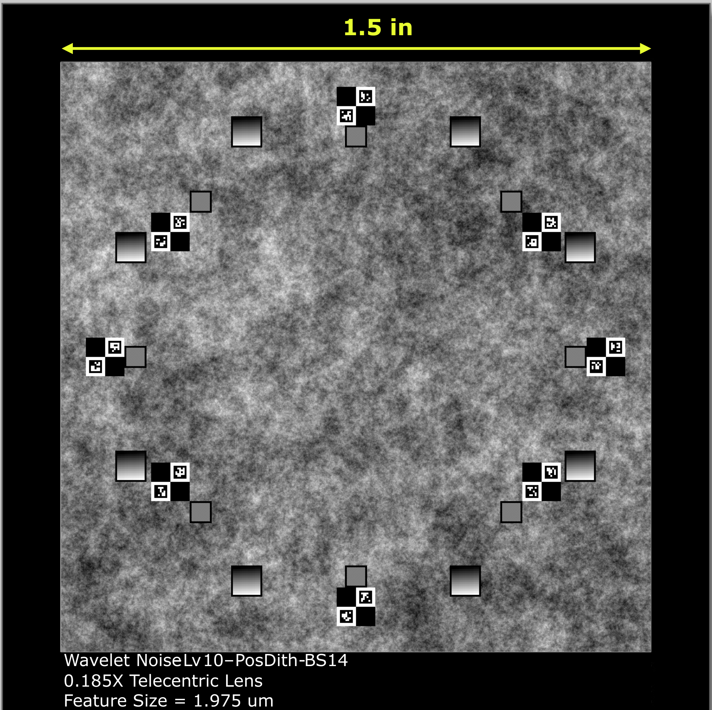
1.3 制造与图像域验证
图案适用性通过以下方面评估：设计与采集参考图案之间的光度一致性、参考采集与经透镜采集之间的残差图，以及在光流所用空间频带上进行的直方图/PSD 检查。
图 2 比较了数字设计、参考采集图像以及经透镜的畸变采集图像。虚线圆圈标记分析区域。残差图像（畸变图像减参考图像）包含多个空间尺度上的透镜引起偏差，而线性/对称对数分屏显示使全局变化和细微伪影均可见。除因透镜衰减而更暗的畸变图像外，灰度直方图保持相似。径向平均 PSD 表明，光流所需的空间频率在制造和成像之后仍然存在。
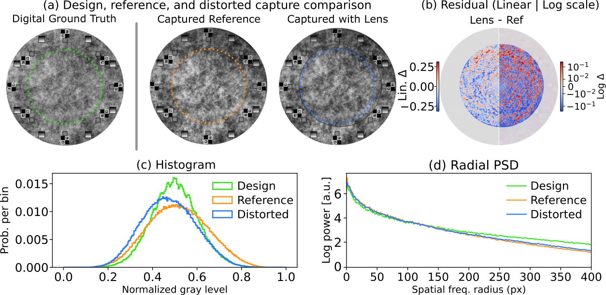
2 图像处理
每次测量使用参考图案图像和经透镜畸变的图案图像，二者均以无损 TIFF 格式存储。帧平均可降低采集噪声；当信噪比足够时，可采用单次采集。边缘检测器定位透镜边界，估计几何中心，并为位移场反演所用区域构建圆形软掩模。透镜图像比参考图像更暗，因此在位移场反演之前，对畸变采集图像应用直方图匹配 [4, Sec. 3.3]。对于本文报告的测量，位移场先用物理径向模型初始化，然后通过直接图像一致性优化进行细化，如第 位移场初始状态估计 节所述。Farnebäck 光流也被测试作为替代初始化方法。由于测得的位移由穿过透镜的折射产生，我们将所得场称为畸变场。
2.1 计算实现
重建代码在 PyTorch 中实现。畸变场反演、可微光线追迹优化和最终表面拟合是独立模块。表面拟合模块也可应用于外部高度图，例如轮廓测量得到的高度图。在 网格上的代表性单对球面透镜处理运行在一台配备 20 GB 内存的 NVIDIA RTX A4500 GPU 上约需 5–11 min。这些计时包括位移场反演、带高度图细化的分阶段表面优化以及最终参数拟合。在这些运行中，仅位移场计算每对约需 5–6 s，包括径向初始化和稠密图像一致性细化。诊断绘图和伪影导出使位移模块的总运行时间达到约 20–23 s。
在配备两颗 Intel Xeon Gold 6330 CPU 的服务器上，球面重建流程在单块 80 GB 显存的 NVIDIA A100 GPU 上对每对采集图像约需 5–15 分钟，使用 网格上的预计算位移场。这些实际耗时包括预处理、分阶段优化、最终参数拟合和输出生成。单次探索性 AL2550 高度图重建在同一硬件上约需 8.5 分钟。这些计时不包括位移场检索和后续独立验证。
十次采集的 AL2550 旋转基准测试使用同一服务器上的一块 A100 GPU，运行 PyTorch 2.6、CUDA 12.4 和双精度重建。十个输入位移场的检索每个场约需 20–50 秒，总计约 6 分钟计算。对全部十次采集的联合拟合在五个阶段中累计优化时间约 4.5 小时，在 网格上总计 11,900 次迭代。该计时不包括位移场检索、输出生成和后续验证。运行时间取决于采集次数、网格大小、表面表示、迭代预算和停止准则。
3 位移场的初始状态估计
位移场通过一个拟合稀疏图像对应关系的紧凑径向模型进行初始化。该模型为后续的稠密图像一致性细化提供初值；随后，细化后的位移场被传递至可微光线追迹表面重建。
3.1 具有圆锥折射面的轴对称透镜物理模型
考虑一个具有平面侧和圆锥折射面的透镜。令 为径向表面斜率。具体而言，对于不含非球面校正的圆锥面，该斜率为
| (2) |
轴向入射光线会看到局部表面倾斜
| (3) |
对于从折射率 到 的单个折射界面，Snell 定律给出的相对于表面法线的透射角为
| (4) |
光线相对光轴的偏差为 ，在有效距离 上传播得到
| (5) |
为进行初始化，使用紧凑的非旁轴近似
| (6) |
其中 吸收了有效传播距离和单位换算。因子 由标称折射率对比度设定，并表示来自 Snell 折射的主导角偏差。保留外切线和斜率角 可保持孔径边缘附近所需的有限角行为。在小斜率极限下，式 (6) 简化为
| (7) |
这是位移与表面斜率之间已知的傍轴关系。参数 由透镜材料和周围介质的标称折射率固定。随后通过最小二乘将参数 、 和 拟合到观测到的畸变场。该估计可快速实现样品的几何识别，并可在制造检测过程中发挥作用。然而，它仍是一个简化模型：它假设旋转对称，将传播和折射压缩为两个标量因子，且未考虑标定后的相机几何或耦合的多表面效应。因此，我们主要用它来初始化稠密位移场的细化。优化后的位移场随后用于可微射线追踪重建。
图 3 总结了通过将径向模型重新拟合到所选平凸透镜的细化位移场而获得的粗略几何估计。对于标称曲率半径低于 的透镜，半径估计与标称值的偏差保持在约 以内，中心厚度（CT）估计的偏差保持在约 以内。更平坦的透镜产生更弱的位移场，并表现出更大的径向模型偏差。
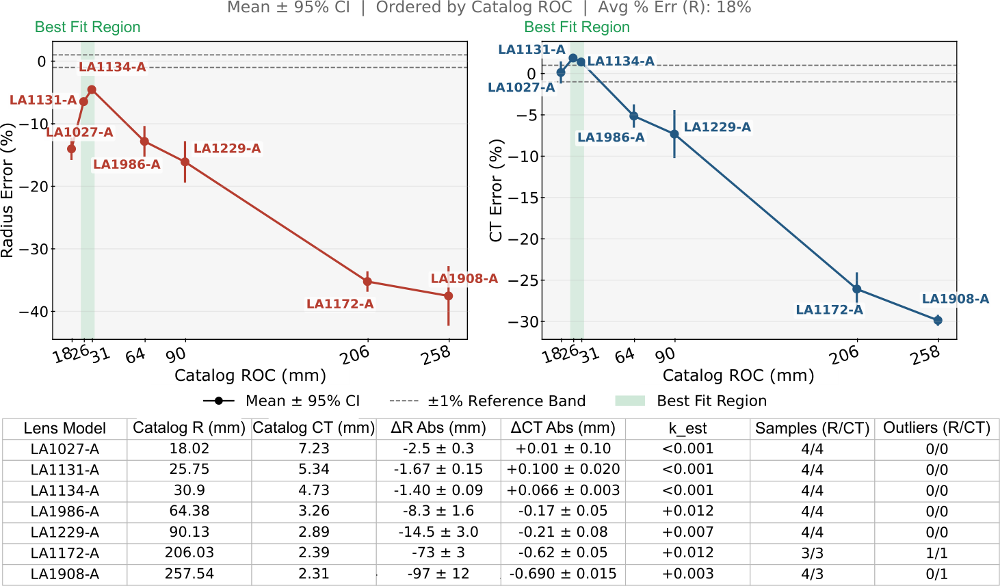
3.2 可微优化细化
在径向初始化之后，通过直接的图像一致性优化对位移场进行细化。将畸变图像与参考图像进行直方图匹配，并在 CUDA 设备上使用 PyTorch 实现来优化稠密位移图。评价函数依赖三个项：
| (8) | ||||
| (9) | ||||
| (10) |
其中 和 分别表示变换后的强度和参考强度， 是畸变场分量， 是空间掩模。总损失将这些项组合为：
| (11) |
其中权重 、、 分别缩放数据保真项、平滑项和无旋约束。在傍轴近似下，畸变场映射为透镜矢高的梯度，因此是无旋的（）。强曲率会通过非线性几何效应违反该条件。我们使正则化权重（例如 ）相对于数据权重（）保持较小。正则化抑制了非相干跟踪噪声，但不妨碍数据项在陡峭区域附近驱动局部重建。
图 4 展示了 LA1608-A 畸变场细化的损失历史。该次运行的初始化使用了拟合到稀疏特征匹配的物理径向切线模型。随后的稠密细化使用了 100 次 Adam 迭代，学习率为 ，然后是用最大 100 次迭代和强 Wolfe 线搜索的 L-BFGS 收尾。对于这一代表性运行，总损失从 降至 。掩膜亮度 MSE 从 降至 ，相对于初始化场对应 的改进。
该位移检索阶段的实测运行时间在处理工作站上约为 。径向初始化占 ，稠密微调占 。这些计时不包括基于光线追踪的后处理表面重建。
4 前向光线模型
4.1 相机模型与非理想远心性
成像模型为有限原点（类针孔）模型，光轴单位向量为
| (12) |
and camera center
| (13) |
这里 是工作距离（当前装置中为 110 mm）， 是从图像平面测量的标定投影光线原点距离。图 5 展示了该相机几何。
坐标在相机固定的世界坐标系中以毫米表示。光线标签 是映射到孔径标签平面 的标定图像坐标，而不是传感器或掩膜上的物理坐标。对于图像列 和行 ，，其中 的单位为毫米/像素；测得的光流 映射为 。图像行符号反转，以使世界坐标 指向上方。
网格位置 的局部入射方向为
| (14) |
标定与重建优化。
有限原点参数 由远心度导出。对于 AL2550 旋转基准，包括轴角在内的完整相机状态是固定的；每次采集都有各自的透镜平移和倾斜。heightmap 工作流允许残余位姿精化。
4.2 表面相交与 Snell 折射
光线通过前、后界面进行追迹。对于曲面界面，交点通过 Newton 迭代 [5] 求解。对于平面界面，使用闭式光线-平面交会。
在每个界面上，矢量 Snell 折射为
| (15) |
with
| (16) | ||||
| (17) |
在发生全内反射时，平方根内的项变为负值，光线权重置零。
4.3 参考落点与带透镜落点
对于每个孔径标签坐标 ，比较平面上的带透镜落点为 。参考（无透镜）落点通过将未折射光线传播到同一比较平面 得到，
| (18) |
在基线 AL2550 配置中， 是穿过经位姿变换的后顶点的全局 平面。在平板辅助配置中，它是 平板的出射平面，该平板的入射面锚定在该后顶点高度处。平板表面保持平行于全局 – 平面。从倾斜后表面到比较平面或平板入射平面的传播可以带符号。裸参考光线既不含透镜，也不含所添加的平板。这些平面遵循保存的重建所使用的光学堆叠约定；它们不必与 重合。
5 预测位移计算
传感器测量提供图像坐标下的观测位移场。令 为以孔径标签毫米表示的参考图像网格坐标，并令 表示连续的带透镜图像坐标。光线追迹器计算从孔径标签坐标到与堆叠相关的比较平面上的物理落点的前向映射，
| (19) |
其中 表示当前透镜与标定参数。无透镜参考光线给出对应的参考落点 。
该前向映射本身并不是光流位移。光流在传感器域中比较参考图像与带透镜图像：在参考坐标 处看到的图案特征出现在带透镜坐标 处。因此， 由逆对应关系定义
| (20) |
预测的传感器域位移是与该逆向坐标相关联的位移，而不是在同一网格样本处计算的两个落点的原始差值。
5.1 传感器域位移的逆对应
对于有限原点相机，参考落点通常不等于传感器网格坐标。定义投影校正
| (25) |
则逆条件变为
| (26) |
因此 。对于倾斜正交光线，参考偏移为常数并相互抵消。对于有限原点光线，它随视场变化。逆映射使用 32 次阻尼迭代，其中 ，并返回传感器坐标位移 。
另一种直接对应损失。
6 重建目标与优化阶段
6.1 损失
重建目标为
| (28) |
其中数据项在固定有效支撑域上比较预测位移与观测位移，并且
| (29) |
对于 AL2550 基准，数据项是重建代码所用的逐分量平方 L2 目标。对于测量 和分量 ，令 ，并令 表示在支撑域平均之前对逐分量平方残差场施加的第 99 百分位限幅。所报告的目标为
| (30) |
其中每个测量具有固定支撑域 。第 12 节中的额外优化测试和位移尺度测试也使用同一目标。
对于通用重建流程，可以为中心厚度和边缘厚度等量启用几何惩罚。在下文讨论的 AL2550 额外优化测试中，透镜厚度固定，且没有中心厚度或边缘厚度惩罚处于激活状态。
6.2 三阶段协议
阶段 1：仅二次曲面拟合。
第一阶段排除非球面系数，并使用
| (31) |
阶段 2：高度图细化。
在第 1 阶段收敛后，单面球面测量细化前表面高度图，并将后表面保持在其拟合参数化形状。两个折射表面均对预测位移有贡献。成对的前/后测量可细化两个高度图。平滑正则化仍然较弱；数据项占主导。
精化会在具有有效物理光线交点且对应关系反演稳定的状态中，选择数据加平滑度目标最低的评估状态。在有限测量掩模的完全加权内部，32 步和 64 步阻尼反演必须在 内收敛，且其查询必须在 内一致。包含所有查询的凸圆盘上，双线性落点映射的正定对称 Jacobian 提供了充分的单射性检验。这些数值检查决定哪些评估状态有资格进行恢复。导出的解还会在完整建模的物理光线标签域上进行检查。这些检查确立的是数值一致性，而非测量精度。
阶段 3：最终参数拟合。
通过拟合带位姿的参数曲面，将优化后的高度图归约为光学形状参数。该拟合在测量坐标中的固定圆形孔径内使用有限点，并在位姿优化期间保持支撑集不变。该配准步骤将表面形状与残余平移和取向分离，这是无独立基准 [6, 7, 8, 9] 的密集 3D 测量所要求的。该拟合估计顶点坐标偏移 （相对于重建坐标原点测量）和角位姿 。在实现的例程中，带位姿表面由局部矢高面使用 获得。这里， 表示表面轴偏离重建 轴的倾斜。角度 指定该倾斜在 - 平面内的方位角方向。
在此配准之后，局部矢高遵循 ISO 10110-12 非球面约定 [10]：
| (32) |
其中拟合参数向量
| (33) |
通过最小化恢复的高度图与带位姿模型之间的垂直残差获得。优化使用 Adam，随后进行 L-BFGS 精化 [11, 12]。对于球面分析， 和 固定为零；对于非球面分析，它们在高度图阶段之后估计，在当前实现中最高到 。在拟合中包含 可防止残余表面倾斜被吸收到曲率或非球面系数中。
上述二次曲面—高度图—参数化序列描述了本补充材料中给出的通用重建和基于高度图的残差分析。对于正文和 Section 12 中报告的定量 AL2550 基准，共享归一化旋转非球面模型（其中 有效、 固定）在固定物理孔径上以分阶段的位姿、半径、二次曲面和非球面精化直接优化。这使得表面比较直接与正向模型中使用的旋转非球面参数相关联。AL2550 各阶段使用带 reduce-on-plateau 调度的 Adam，并恢复每个阶段的最佳状态。
AL2550 采集使用 Grasshopper3 相机，工作在 Mono16 模式，具有 10 个有效 ADC 位，并采用无符号 16 位 TIFF 存储。对每个参考 burst 和测量 burst，用浮点累加对十帧合格帧取平均，每个均值保存为 float32 TIFF。每个物理放置组合两个未受扰动的重复 burst；在计算一个 flow 估计之前，对其均值做算术平均。它们共享一个位姿。七个基线放置和三个 slab 辅助放置具有相同的测量权重。每个放置使用与其采集关联的参考 burst 均值；结束参考 burst 被保存用于漂移诊断。固定的 flow 裁剪以传感器为中心。Flow 在半径为 405 像素的掩模上估计，然后在以配对的 fiducial 导出的载波中心估计为中心、直径为 的固定圆盘上评分，并与有效观测支撑相交。
该 flow 对联合缩放到 uint8 并做直方图匹配。物理径向拟合以数据/平滑/旋度权重 初始化稠密亮度细化。Adam 最多使用 10,000 次迭代，初始学习率为 0.005，平台期耐心为 50，线性学习率衰减为 0.01 至最小值 ，并在连续 100 次迭代的改进不大于 后早停。strong-Wolfe L-BFGS 尾段最多 100 次迭代。未启用预模糊或后滤波平滑。局部位移离群值使用 51 像素窗口和 2.5 标准差阈值。
共享形状从 、 开始，无随机初始化抖动。初始采集位姿从前一个仅位姿 bootstrap 恢复；配置的轴向旋转保持固定。横向平移和两个透镜倾斜角在每个阶段保持活动；轴向平移、轴向旋转、后表面形状、厚度、折射率和相机状态固定。厚度和边缘厚度惩罚被禁用。
五个 Adam 阶段分别是仅位姿（2500 次迭代）、半径与位姿（1200）、圆锥常数与位姿（1200），以及两个全活动非球面/位姿阶段（4000 和 3000）。所有保存的阶段都完成了其迭代预算。相应的无改进停止耐心分别为 600、500、500、600 和 600 次迭代，最小改进为零。Reduce-on-plateau 在 200、200、200、250 和 300 次停滞迭代后将学习率减半，相对阈值为 ，最小学习率为 。Warmup 应用于第一个和最后两个阶段（300、100 和 100 步）。形状和位姿坐标具有记录在冻结配置中的独立学习率。每个阶段恢复光学目标最低的状态；CCP 一致性在重建后评估，不进入损失或状态选择。
冻结的 AL2550 相机使用 、、远心度参数 、 以及标定直径 。对应的距离为 和 。这些值在展示时经过舍入；重建配置存储完整的数值状态。这里 从 测量， 从 朝向 测量；透镜位姿使用 。该相机配置在 AL2550 反演期间保持固定。标定表单独汇总了重复的 slab 拟合。
7 残差与像差分析
优化高度图包含来自数据一致性项的空间信息。常规几何参数仅在后续拟合步骤中获得。最终拟合后，在拟合的局部表面坐标中并在通光孔径掩模内评估残差。利用各向同性高斯滤波器 [13] 将波纹度与高频成分分离。高斯低通约定在指定截止波长 处具有 50% 振幅透过率，其中 采用物理坐标。下例使用 在 Zernike 分析前抑制较短周期成分；该截止是一种处理选择，而不是经证实的光学性能边界。将滤波后残差分解为 Zernike 模式，以概括主要的类像差偏离 [14]。
我们考虑两种残差定义。第一种将优化高度图 与其最佳拟合参数曲面 进行比较：
| (34) |
该残差分离出在去除最佳拟合全局形状后仍保留的偏离，因此适合分析局部表面结构。第二种将优化高度图与标称设计曲面 进行比较：
| (35) |
该残差同时包含局部表面偏离和相对于设计的全局参数偏差。任一残差均可在 Zernike 分解前转换为波前误差：
| (36) |
这里 以波长为单位， 是无量纲量，且 和 必须使用相同的长度单位。这是针对用透镜材料替代空气的矢高偏离的薄相位、近正入射光程近似。它忽略了斜传播、两个表面的耦合偏离以及下游波前传播。我们使用 作为分析参考；AL2550 残差图使用固定折射率 ，因此其波前转换是示例性的，且与 565 nm 重建分开。对于色散光学预测，需要波长相关折射率。解读取决于残差定义。 强调去除最佳拟合位姿曲面后的残余形状误差。 度量相对于设计处方的偏离，因此包含参数偏差，包括残余光焦度误差。在本分析中，残差用 15 项 Zernike 项拟合，这足以表示此处所示的低阶内容。所报告的高阶重建排除前四项 Noll 项，对应平移、tip/tilt 和离焦，因此强调像散、彗差和类球差项。当残差包含更复杂结构时，可使用更高阶展开 [15, 16]。图 6 报告了 LA1608-A 示例的 。为简洁起见，省略以设计为参考的残差。
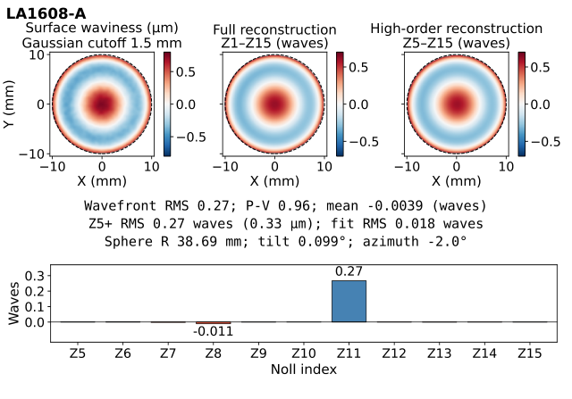
我们还展示了一项探索性残差结构比较，以说明高度图重建所捕获的空间信息类型。该比较有意与上述定量AL2550基准保持分离。定量AL2550结果使用直接旋转非球面重建。下面的残差图来自更灵活的高度图重建，其位姿–面形分离和模态幅值尚未得到同等程度的验证。每个数据集随机下采样至100,000个有效高度点（种子2026），并裁剪至，然后拟合并减去一个二阶二维多项式。该减法未使用标称非球面轮廓。该减法去除二次结构，包括曲率和类像散项，无论其来源于透镜、对准还是仪器。它并不将去除的项认定为CCP误差，也不将剩余结构认定为透镜固有波纹度。随后用0.8 mm高斯截止对残差进行滤波，并转换为处的波前误差。可用CCP视场将比较限制在圆形窗口内。图7表明，主导的DRT残差类似于低阶CCP结构，尤其是在球面Z11像差方面。四舍五入到两位有效数字，Z11系数对于CCP为0.45波，对于DRT为0.61波；Z5+系数的RMS值分别为0.55波和0.61波。这些模态汇总值对DRT更大，并不支持其整体残差幅值被衰减。各图使用独立色标范围，因此不能直接跨行比较颜色强度。系数图共享共同纵轴刻度。现阶段，表观的模态相似性仅被视为定性观察。特别是，位姿–表面耦合、图像校准残差以及依赖于表示方式的平滑都可能改变恢复的残差场。因此，我们不将Zernike系数或DRT–CCP残差相似性用作定量表面精度验证。更高的相机分辨率和改进的图像畸变校准应使该比较更具定量性。
图 7 中的孔径限制来自 CCP 基准，而非透射几何本身。透射装置也不像 CCP 那样受探针工作距离约束；在本仪器中，测量距离由远心工作距离 决定。DRT 可利用更大部分的透镜孔径，因为更强的曲率会产生更大的位移信号，并相对于更平坦表面改善条件数。CCP 和干涉测量则面临相反的趋势：陡峭斜率会减小可及孔径。这一优势存在边界。一旦折射光线超过远心成像系统的角度接受范围，跟踪与重建就变得不可靠。该限制与 Ramirez-Andrade 和 Falaggis 在视觉光线计量中讨论的远心性和光线接受约束有关 [17]。
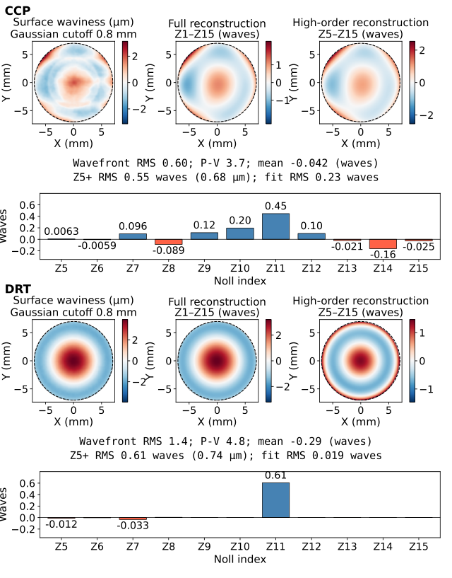
8 成像系统校准
成像系统校准使用与透镜重建相同的差分测量原理。传统相机校准根据在多个视角下观察到的平面靶标估计位姿和畸变 [18]；远心变体通常保留这种基于靶标的结构，并用正交或近正交模型替代针孔投影 [19, 20]。这里，图案化掩模仍是靶标，但透镜样品被替换为已知厚度且折射率已测量的商用玻璃板。玻璃板以可预测的方式使其后方图案发生畸变。由于位移很小，稠密 Farnebäck 光流估计已足够。然后，将可微光线追踪模型拟合到该场，以估计成像轴的角度位姿以及用于非理想远心性的有限原点参数。
我们采用有限原点投影模型 [21，第 6 章] 来表示近远心相机。传感器位于距图案平面工作距离 处，光线沿标定光轴从传感器后方的有效原点追迹；在远原点极限下，该模型趋近于远心投影。近期的远心标定工作显式建模成像误差，并使用约束联合优化 [22] 解决位姿符号模糊性；该工作并未建立本文所用的有限原点模型。标定量为远心轴的角度位姿（由 和 参数化）以及投影光线原点距离。根据这种有限原点几何，我们报告由全孔径推导出的最大主光线角，作为远心度误差。图像坐标使用标定放大倍率 进行变换，该倍率取自制造商技术报告。
在实验中，我们采集未畸变图案的常规参考图像，以及将平板商用玻璃片放置在图案上后采集的第二幅图像。对于垂直于图案平面的理想远心系统，平板玻璃片在配准后不会产生横向畸变。因此，测得的位移场直接约束角度位姿和有限原点参数。一旦估计得到，只要相机与图案之间的相对几何关系保持固定，这些参数就会被重复使用。反之，如果相机位姿固定且玻璃片厚度已知，则相同的折射标定实验可用于估计未知透明材料在测量波长处的折射率。
通过假设最小可靠位移为相机像素的十分之一，可得到单像素灵敏度估计：
| (37) |
其中 是相机像素间距， 是远心放大倍率， 和 分别是空气和标定玻璃片的折射率， 是玻璃片厚度。使用 、、、 和 可得 。
该估计是保守的，因为它将测量视为依赖于单个局部位移值。在标定拟合中，参数由全孔径上的密集位移场推断；一致的角度变化同时受到许多像素的约束，因此有效重复性可以优于单像素估计。
标定汇总使用四次独立的玻璃片采集。标定坐标系沿负 方向追迹光线，因此在 附近报告的极角对应于相对图案法线约 的倾斜。对 轴作反射可得到前向模型约定 ；该反射不改变方位角。每次采集均单独优化；表中汇总了它们的拟合值。冻结的 AL2550 相机状态在第 6 节中单独说明。图 8 展示了另一组四次玻璃片拟合序列中极角 、方位角 和推导出的远心度角的收敛情况。它们的最终远心度值跨度约为 ；绘制的包络使用每次迭代时可用的拟合结果。
对于主手稿中报告的测量，校准使用了两块6.5 mm商用玻璃平板堆叠在图案上，以提高所检索位移场的信噪比。由于该材料与标称熔融石英或熔融二氧化硅不匹配，其折射率通过光谱椭偏法测量，并在校准模型中经验使用。校准中使用的值为565 nm下的；测量细节见第实验折射率测量节。
图9显示了一次校准测量，表2总结了四次独立重复。拟合的对准在重复间稳定，并显示出相对理想远心性的微小可测偏离。模型拟合的最大主光线角约为。该值是投影相机模型的有效远心误差，而不是对制造商远心镜头规格的直接重新测量。有效原点位于传感器后方约处、距图案平面处，包括工作距离。图9中的残差位移图包含来自平板测量和Farnebäck光流估计平滑行为的局部中空间频率结构。全局位姿和有限原点模型无法再现所有这些结构，但整体位移场以亚微米RMS残差拟合。
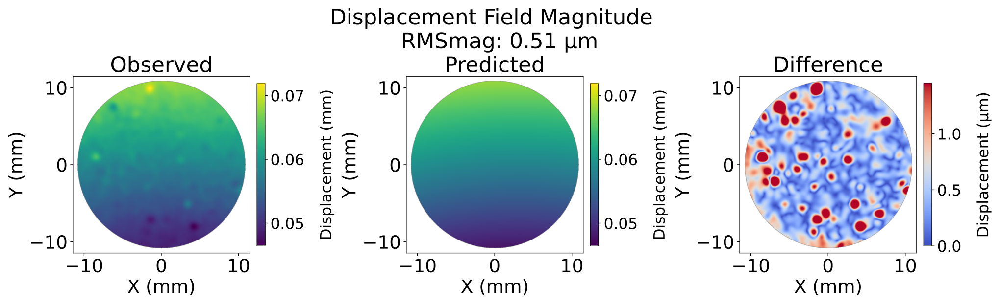
| Parameter | Mean SD | |
|---|---|---|
| (∘) | 4/4 | |
| (∘) | 4/4 | |
| Telecentricity (∘) | 4/4 | |
| 原点到传感器距离 | m | 4/4 |
| RMS residual (m) | 4/4 |
目前的校准尚未包括完整的场依赖图像畸变校正。其对所报告几何误差的贡献尚未被分离出来。未建模的图像畸变会影响拟合的表面参数和基于残差的像差估计，因此与目录或 CCP 表面的吻合并不能确定该贡献的界限。密集场测量为此类校正提供了直接途径：在拟合已知平板折射和全局位姿后，可重复的残余位移可参数化为成像畸变。鉴于远心度、波前质量与低不确定度光学计量之间的密切联系，这一扩展尤为重要 [23]。
9 实验折射率测量
用于校准和双位置测量的透明平板的折射率通过光谱椭偏术测量；未使用材料标称值。测量使用 Woollam M-2000 可变角光谱椭偏仪进行，重建中使用的值通过在照明波长 处对平均测量色散曲线进行插值获得。图 10 显示了测量色散曲线及其最小–最大值带。
相机校准测量使用了两块堆叠在掩模上的 商用玻璃平板。在发现其测得色散与标称熔融石英或熔融二氧化硅不兼容后，这些平板被按商用玻璃处理。校准值为在 处的 。同样的材料表征流程也应用于一块 钠钙显微镜载玻片和一块 熔融石英平板（Chemglass Life Sciences CQG-0620-05），它们作为双位置测量方案的中间层进行了测试。在 处插值得到钠钙玻璃的 和熔融石英的 。狭窄的最小–最大值带表明拟合折射率的测量间变化很小。
10 测量多样性与条件化
透射逆问题可能病态，因为表面与位姿变化的耦合会产生相似的透射光线位移。对于 AL2550，后表面为平面且保持已知，因此相关歧义在于有限孔径上相关的旋转非球面参数与采集位姿之间。多次旋转、重新装夹和辅助平板采集提供了互补采样和光学灵敏度。仅面内旋转不会改变旋转表面的固有形状；这些采集之间的差异源于放置、采样和光学配置。
数据包含七次基线采集（A 面）和三次平板辅助采集（B 面），在掩模与透镜之间插入了折射率为 1.4588 的校准 熔融石英平板。两面均包含标称 、 和 状态；A 面还包括四次标称零位重新装夹。
带有编码基准标记的紫外激光切割透明跟踪环提供载具中心估计和可用的面内取向测量。固定直径为 的刻痕圆盘使用成对的由基准标记导出的载具中心，这与图 11 中检测到的物理边界叠加不同。八次采集可获得跟踪角度；旋转重建对所有十次采集保留标称面内角度。横向偏心与两轴倾斜独立拟合，不强制到跟踪中心。第 12.2 节评估用边界导出的估计替代刻痕圆盘中心的敏感性。
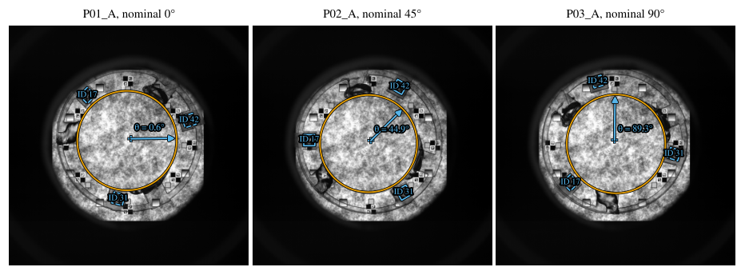
雅可比矩阵通过加权残差表示的中心有限差分计算，该表示的平方范数等于逐分量 L2 目标，包括其第 99 百分位平方误差上限。该上限在支撑集选择之前计算，并在每次扰动时重新计算。局部地，，其中优化器形状坐标为 ，每次采集的位姿坐标为 。物理多项式尺度为 、 和 ，对应 。消去线性化位姿增量得到 Schur 补 [24]
| (38) |
其中 是 Moore–Penrose 伪逆 [25]，采用相对截断 。这考虑了局部位姿调整，并与可分离最小二乘 [26] 中的投影有关；它是一种重建后诊断，而不是对非线性位姿的精确优化。对目标加权的采集块求和，得到平均目标法矩阵。乘以总采集权重可得到所报告的信息和，并保持条件数不变。我们报告法矩阵正谱比
| (39) |
采用相对特征值截断 。这些值适用于所述固定坐标；对于满秩情形，该法矩阵比值是有效 Jacobian 条件数的平方。每个绘制的谱均除以其最大特征值，显示的是相对条件性而非绝对灵敏度。
在此截断下，所有测试集均保持数值秩为五，且仍为强病态。条件数分别为：一次基线采集为 ，三次基线旋转为 ，加入名义零位重新放置后为 ，匹配的基线与平板辅助旋转为 ，全部十次采集为 。平板适度改善了相对条件性，但并未解决系数相关性。即使条件数变差，增加测量仍可提高绝对信息量。这些局部结果取决于固定的校准、厚度、折射率、后表面、平板模型和评分支撑；它们既不能确立全局唯一性，也不能确立测量不确定度。
11 CCP 基准处理
使用 Nanovea ST400 非接触点扫描轮廓仪测量了该透镜 [27, 28, 29]。归档的 AL2550 XYZ 导出数据覆盖约 ，横向采样为 ，并由原始轮廓仪处理得到的阈值化导出数据生成。图 14 显示了测量表面的三维视图。应用于导出坐标的横向校准因子在两个扫描方向上分别为 1.0127 和 1.0135。AL2550 总矢高约为 ，大于 探针量程，因此外侧陡峭区域未用作定量验证孔径。可测斜率还受物镜数值孔径 [28, 27] 的限制。
对于正文中报告的基准，CCP 验证支撑集独立于拟合表面而冻结。孔径中心由测量顶点估计，然后在 CCP 测量坐标系中选择固定的直径 的圆形窗口。从归档的 XYZ 导出数据开始，包含该窗口内的有限采样点；不应用额外的依赖拟合的点剔除、插值、替换或迭代支撑集细化。随后，同一冻结点集被复用于所有目录、自由非球面和 DRT 比较。这避免了当孔径在拟合表面上反复重新定心时可能发生的支撑集变化。
首先通过五自由度刚性配准将制造商处方配准到 CCP 数据。然后，在保持该配准不变的情况下，在相同的固定支撑集上执行单独的旋转非球面拟合。其自由形状参数为 、、、、 和 。拟合初始化时不使用制造商非球面系数。因此，CCP 测量是独立数据源，而用于旋转拟合的刚性配准继承自目录配准步骤。单个多项式系数不用作主要基准，因为有限孔径参数化具有强相关性。
对于半径 孔径上的两个旋转矢高剖面 和 ，我们报告圆域面积 RMS 差
| (40) |
因子 以环带面积对每个径向区间加权，因此该量是旋转对称下整个圆孔径上的 RMS 矢高差，而不是对均匀采样径向坐标的非加权 RMS。
原始 CCP 点相对于刚性配准后的制造商表面的残差在固定支撑集上为 RMS。该量包含非轴对称/局部结构和测量残差。因此，为了与旋转 DRT 模型比较，我们使用式 (40) 中定义的圆域面积 RMS 矢高差。拟合得到的 CCP 旋转表面与制造商处方在中心 直径范围内的差异为 RMS。所选 DRT 表面与制造商表面在同一比较区域内的差异为 RMS，与 CCP 旋转表面的差异为 RMS。

12 AL2550 重建验证与系统控制
DRT 重建在固定直径 的评分圆盘上进行优化，这些圆盘以成对的、由基准标记推导的载波估计为中心，并与有效观测支撑域相交。这些圆盘保持固定，而横向偏心与倾斜独立拟合。联合重建包含七次基线测量和三次平板辅助测量，每次测量有单独的采集位姿，并共享一个旋转透镜表面。B 侧在前向模型中包含实测熔融石英平板。中心 区域仅用于将所得旋转表面与 CCP 比较；CCP 从不用于重建目标。
12.1 分阶段表面轨迹
图 15 展示了初始化时以及每个重建阶段之后的光学损耗，以及相对于独立获取的 CCP 旋转表面的圆域表面差异。位姿调整降低了光学损耗而不改变初始化表面；随后的形状优化在正文所报告的最终重建过程中降低了这两个量。
12.2 评分中心灵敏度
我们将所报告的由基准标记推导的评分中心与通过对两幅重复图像的物理边界检测取平均得到的中心进行比较。两个匹配的 2000 次迭代联合延续从相同的最终形状和位姿出发，使用完全相同的冻结位移场和优化设置；仅固定的评分中心不同。恢复表面在中心直径 范围内的面积 RMS 差异为 ，最大差异为 。它们相对于 CCP 旋转参考的 RMS 差异为：基准标记中心 ，边界中心 。尽管光学损耗更低，两者均超过所报告重建的 ，从而将较小的中心效应与较大的延续漂移区分开。保留所报告的重建。
12.3 附加优化与参数可辨识性
为检验所报告的重建是否受限于未完全收敛，从精确的最终状态出发，使用三组参数额外运行 2000 次迭代：仅位姿、仅透镜形状以及位姿与透镜形状联合。仅位姿优化使目标函数降低 0.11%，且矢高保持不变。仅形状优化使目标函数降低 1.3%，但使恢复矢高改变 RMS，并使与 CCP 的差异从 增大到 。位姿–形状联合优化给出相同的面形行为，目标函数降低 1.5%，矢高变化为 RMS。因此，进一步最小化位移目标函数并不一定改善恢复的面形。
仅使用基线测量或仅使用平板辅助测量进行独立优化，会使矢高沿几乎相同的径向方向发生变化。相应的 RMS 矢高变化分别为 和 ，且这两个径向变化几乎共线。平板辅助测量在其位移目标函数上给出更大的降低，但共同的矢高方向表明该偏差并非平板辅助几何所特有。
对于完整的十次测量重建，归一化形状法矩阵严重病态，其正谱条件数约为 。其最弱模态由归一化 和 坐标主导。在固定 和 、仅使 、 和 活跃的情况下重复附加优化，会产生基本相同的矢高变化，同时实现约 98% 的目标函数降低。仅基线测量和仅平板辅助测量也得到相同的低阶矢高方向。因此，观测到的矢高偏差并不需要弱约束的高阶系数。
12.4 有效位移尺度诊断
接下来，我们分析仅施加于冻结的实测位移场 的乘性尺度，同时保持空间网格、重建孔径、透镜状态、位姿、相机模型和平板模型固定。该分析使用精确的重建目标函数（按分量 L2，并采用所报告的第 99 百分位钳制）。最佳共享尺度对应 +0.16% 的位移变化，使十次测量目标函数降低 0.29%，而面形不变。单独诊断分析给出 A 侧 +0.067%、B 侧 +0.24%。
然后将该共享因子施加到冻结的位移场，并从同一报告的重建结果出发重复仅 的优化。仅尺度目标函数与该次运行的初始目标函数在数值精度上一致，确认了预期的初始状态。在位移尺度调整后，后续低阶矢高变化从 降至 RMS，降低了 75%。最终面形与独立参考也更加接近，优于所选重建：与 CCP 的 RMS 差异从 降至 ，与制造商处方的差异从 降至 。图 16 比较了相对于两个独立参考的径向矢高差。
本实验识别出一个有效的位移尺度模式，它与恢复出的低阶表面存在因果耦合。它本身并不能确定该模式的物理来源。乘性位移变化可以表示光流尺度、空间标定、相机几何或另一种前向模型失配。因此，尺度因子仅用于诊断对位移标定的敏感性，并不作为对测量系统的标定校正施加。
13 合成表面可恢复性对照
上述 AL2550 验证涉及从实测位移场中恢复的旋转非球面。使用独立的合成对照来确定几何反演和完整图像处理链可恢复哪些空间频率与幅度范围。这些对照量化合成可恢复性，并非实验分辨率测量。合成孔径的直径为 ；每孔径 个周期表示空间频率为 的方向性正弦，与方向无关。因此，测试频率为 0.08、0.16、0.32 和 。表面指标使用单独的 评估网格，覆盖 半径的 95%；具有代表性的仅光线面形图显示全孔径。采样注入真值使用 高度图。这些孔径不同于 真实数据重建和 旋转对比。
注入的扰动是方向性正弦矢高场，覆盖每孔径 2、4、8 和 12 个周期，具有 和 两种方向以及正弦/余弦相位。其 RMS 矢高在去除均值分量后于圆孔径上定义。图 17 展示了受控研究中使用的空间频率族。
13.1 光线追迹面形恢复
第一个合成测试在成像和光流估计之前单独考察光线追迹反演。在每个空间频率下评估了六个 RMS 矢高振幅，、、、、 和 。对于每个频率–振幅对，四种方向/相位组合通过 AL2550 光线模型在三个固定采集位姿下传播。恢复使用包含所有测试正弦模式的 16 模笛卡尔频率基，并针对每个合成测量优化采集位姿 。因此，该测试在光线追迹反演中包含了模态交叉耦合和位姿不确定性。
对于共同支撑域上的真值场和恢复场 和 ，恢复增益为 ，相关性为中心化 Pearson 相关，NRMSE 为 。对于仅光线追迹的模态反演，增益为恢复的注入模系数除以其注入振幅；串扰为最大绝对非对角系数比。通过要求增益位于 、串扰 、表面 NRMSE 、表面相关性 ，以及位姿可解释位移能量 。位移统计采用五像素步长。
所有 24 个频率–振幅组合在测试范围内均通过了预定义的几何恢复判据。图 18 展示了一个代表性的每孔径 4 周期、-RMS 情形。该振幅低于加入成像和光流估计后得到的恢复极限，表明在此空间频率下，光线追迹反演本身并非限制步骤。
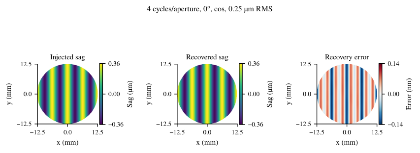
13.2 完整的合成图像链恢复
第二个合成测试评估完整的图像处理链
对两个匹配的相机模型和两个成像层级，在六个矢高振幅下测试了相同的每孔径 2、4、8 和 12 周期系列。理想渲染器包括重采样和面积积分，但省略模糊、照明变化、附加噪声和采集量化。Farnebäck 适配器对图像对进行直方图匹配和归一化，然后在内部将两个层级都转换为 8 位图像。真实感渲染器还使用具有 个传感器像素的高斯 PSF、径向照明衰减 0.10、水平梯度 0.03、在 8 位尺度上具有 个数字计数的独立高斯读出噪声，以及 8 位采集量化。两个层级均在原始像素间距下使用二倍超采样、逆重采样和面积积分。源图像是由 Lanczos 插值重建并缩放到全强度 0.90 的捕获参考纹理；这些是受控的合成输入，而非独立标定的成像参数。
相机采用正交模型，具有平行倾斜主光线，以及匹配的有限原点球面光线模型；两者使用相同的孔径标签、基面和位姿。完整图像测试使用 幅图像于 ，支持半径为 329 像素。在分别去除仿射光流分量后，它从基础透镜与扰动透镜图像之间的相对光流估计已知正弦振幅。Farnebäck 参数设置为金字塔尺度 0.5、五层、15 像素窗口、十次迭代、多项式邻域 5、多项式 和高斯加权，且不进行迭代稠密细化。
每个完整图像模式必须具有至少 90% 的共同支撑，且相对反演的 99 百分位误差为 像素。剖面光流必须在 内具有增益、相关性 和 NRMSE 。恢复的矢高必须在评估孔径上独立去除活塞/倾斜后，具有振幅增益在 内、NRMSE 和相关性 。串扰通过仅光线的 16 模式逆进行测试；完整图像测试拟合一个已知模式。频率–振幅单元仅当所有四种方向/相位组合均通过每项判据时才通过；所报告的极限是通过测试的最小振幅，且所有更大的测试振幅也通过。离散网格不能建立连续检测阈值。在两个相机和两个层级上，该测试包含 384 条模式记录和 96 个单元。
基础种子为 2026。采集种子为 ，其中 从零开始索引振幅/方向/相位组合， 索引相机， 索引图像层级。理想渲染器不添加随机噪声。仅光线恢复不使用随机采样。
在每孔径 2、4、8 和 12 个周期处，满足恢复判据的最低振幅对于理想图像形成分别为 、、 和 RMS，对于真实图像形成分别为 、、 和 RMS。两种相机模型给出了相同的极限。图 19 总结了这些结果。
在此测试中，正弦基底已知，仅恢复扰动振幅。因此，所得频率–振幅极限适用于该受控基底，不能确立一般自由曲面可恢复性。
13.3 跨表示对照
图 20 比较了仅使用光线对六个独立真值面的恢复：分别采用三次 B 样条基（49 个表面参数）、总次数为 8 的 Chebyshev 基（45 个参数）以及三次 NURBS 基（49 个参数，非均匀权重固定）。真值分别为每孔径 4 和 8 周期的方向性正弦混合、混合采样高度图、更高分辨率的 B 样条与 NURBS 表面、10 次 Chebyshev 表面，以及具有局部精细结构的采样表面。真值与恢复模型在基或分辨率上不同。每个真值在同上 95% 半径评价圆盘上移除活塞/倾斜后均具有 RMS 矢高。
反演使用三种采集几何，相机参数为固定的有限原点相机参数，并将独立的平面内平移和倾斜作为对准参数进行拟合。交替网格样本用于拟合和留出光线评估。表面坐标归一化到相同 RMS 矢高，投影去除位姿子空间，并对线性化表面反演施加统一的 0.01 相对奇异值截断。随后用非线性光线模型评估每个恢复状态。仅当表面 NRMSE 为 、表面相关性为 、留出光线扰动 NRMSE 为 ，且至少 99.9% 的留出支撑仍然有效时，比较才通过。图像形成和光流估计不纳入。
在这组准则下，三种基均能恢复平滑 B 样条和 NURBS 真值；只有 Chebyshev 还能恢复混合高度图。没有任何一种基能恢复所有测试真值。正弦混合和局部精细结构即使将其矢高直接提供给表面拟合，其最佳逼近 NRMSE 也约为 0.83–0.86，表明所测试的基在这些情况下灵活性不足。重建误差超过这些逼近界限。对于 10 次 Chebyshev 真值，Chebyshev 反演给出的留出光线 NRMSE 为 0.063，但表面 NRMSE 为 0.17。因此，与位移场一致并不能保证准确恢复任意自由曲面。这些分数包括评价圆盘内超出部分采样光线覆盖范围的外推。
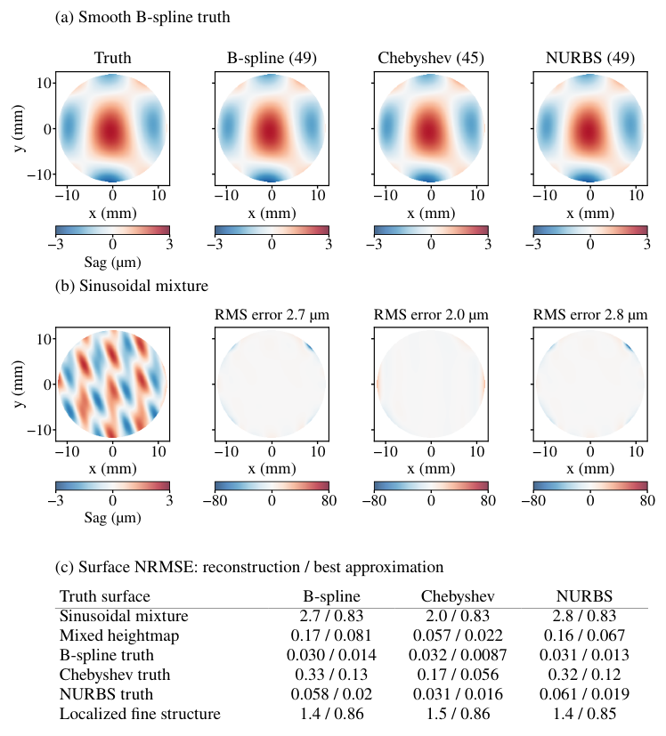
References
- [1] R. L. Cook and T. DeRose, “Wavelet noise,” ACM Trans. Graph. 24, 803–811 (2005).
- [2] G. Farnebäck, “Two-frame motion estimation based on polynomial expansion,” in Image Analysis, vol. 2749 of Lecture Notes in Computer Science J. Bigun and T. Gustavsson, eds. (Springer, 2003), pp. 363–370.
- [3] Y. Wang, W. Wang, Y. Li, et al., “Research on traditional and deep learning strategies based on optical flow estimation - a review,” Journal of King Saud University - Computer and Information Sciences 36, 102029 (2024).
- [4] R. C. Gonzalez and R. E. Woods, Digital Image Processing (Pearson, 2018), 4th ed.
- [5] H. Gross, “Raytracing,” in Handbook of Optical Systems, vol. 1 H. Gross, ed. (Wiley, 2005), chap. 5, pp. 173–228.
- [6] J. McBride and K. Cross, “The measurement and analysis of the three-dimensional form of curved surfaces,” International Journal of Machine Tools and Manufacture 36, 597–610 (1996).
- [7] M. Hill, M. Jung, and J. McBride, “Separation of form from orientation in 3D measurements of aspheric surfaces with no datum,” International Journal of Machine Tools and Manufacture 42, 457–466 (2002).
- [8] N. El-Hayek, H. Nouira, N. Anwer, et al., “A new method for aspherical surface fitting with large-volume datasets,” Precision Engineering 38, 935–947 (2014).
- [9] N. El-Hayek, N. Anwer, H. Nouira, et al., “3D measurement and characterization of ultra-precision aspheric surfaces,” Procedia CIRP 27, 41–46 (2015).
- [10] International Organization for Standardization, “ISO 10110-12:2019 optics and photonics — preparation of drawings for optical elements and systems — part 12: Aspheric surfaces,” Standard ISO 10110-12:2019, International Organization for Standardization, Geneva (2019).
- [11] D. P. Kingma and J. Ba, “Adam: A method for stochastic optimization,” (2017).
- [12] D. C. Liu and J. Nocedal, “On the limited memory BFGS method for large scale optimization,” Mathematical Programming 45, 503–528 (1989).
- [13] International Organization for Standardization, “Geometrical product specifications (GPS) – filtration – part 21: Linear profile filters: Gaussian filters,” Standard ISO 16610-21:2025, International Organization for Standardization, Geneva, Switzerland (2025).
- [14] V. N. Mahajan, “Zernike polynomial and wavefront fitting,” in Optical Shop Testing, D. Malacara, ed. (Wiley, 2007), chap. 13, pp. 498–546.
- [15] M. P. Rimmer and J. C. Wyant, “Evaluation of large aberrations using a lateral-shear interferometer having variable shear,” Appl. Opt. 14, 142–150 (1975).
- [16] M. V. Svechnikov, N. I. Chkhalo, M. N. Toropov, and N. N. Salashchenko, “Resolving capacity of the circular zernike polynomials,” Opt. Express 23, 14677–14694 (2015).
- [17] A. H. Ramirez-Andrade and K. Falaggis, “Height reconstructions from geometric wavefronts using vision ray metrology,” Applied Optics 63, 8630 (2024).
- [18] Z. Zhang, “A flexible new technique for camera calibration,” IEEE Transactions on Pattern Analysis and Machine Intelligence 22, 1330–1334 (2000).
- [19] D. Li and J. Tian, “An accurate calibration method for a camera with telecentric lenses,” Optics and Lasers in Engineering 51, 538–541 (2013).
- [20] Y. Duan, P. Hu, H. Deng, et al., “Flexible and simple telecentric camera calibration method,” Appl. Opt. 61, 9625–9633 (2022).
- [21] R. Hartley and A. Zisserman, Multiple View Geometry in Computer Vision (Cambridge University Press, 2004), 2nd ed.
- [22] Y. Zong, W. Li, X. Wang, et al., “Accurate geometric modeling and calibration of bi-telecentric imaging systems for precision optical measurement,” Optics and Lasers in Engineering 204, 109854 (2026).
- [23] D. Xu, R. Chaudhuri, and J. P. Rolland, “Telecentric broadband objective lenses for optical coherence tomography (OCT) in the context of low uncertainty metrology of freeform optical components: from design to testing for wavefront and telecentricity,” Opt. Express 27, 6184–6200 (2019).
- [24] B. Triggs, P. F. McLauchlan, R. I. Hartley, and A. W. Fitzgibbon, “Bundle adjustment — a modern synthesis,” in Vision Algorithms: Theory and Practice, B. Triggs, A. Zisserman, and R. Szeliski, eds. (Springer Berlin Heidelberg, Berlin, Heidelberg, 2000), pp. 298–372.
- [25] R. Penrose, “A generalized inverse for matrices,” Mathematical Proceedings of the Cambridge Philosophical Society 51, 406–413 (1955).
- [26] G. H. Golub and V. Pereyra, “The differentiation of pseudo-inverses and nonlinear least squares problems whose variables separate,” SIAM Journal on Numerical Analysis 10, 413–432 (1973).
- [27] B. Mell, “Aspheric lens dimension using 3D profilometry,” Tech. rep., Nanovea (2010).
- [28] F. Blateyron, “Chromatic confocal microscopy,” in Optical Measurement of Surface Topography, R. Leach, ed. (Springer Berlin Heidelberg, Berlin, Heidelberg, 2011), pp. 71–106.
- [29] Q. Hao, Y. Liu, Y. Hu, and X. Tao, “Measurement techniques for aspheric surface parameters,” Light: Advanced Manufacturing 4 (2023).